step 1、download link for app: https://wwa.lanzous.com/ivM9Gmhvweb
step 2、install app ,then copy app path to /Applications (see picture below)
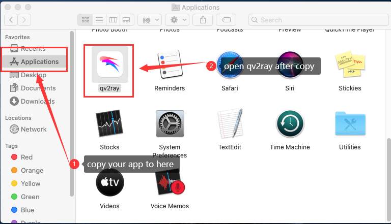step 3、follow the step below to open app if you fail to open app
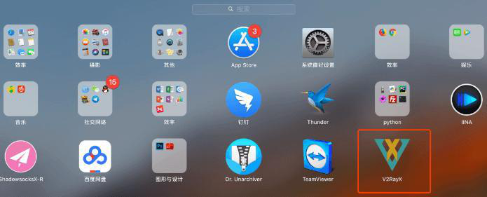 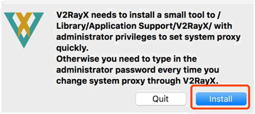 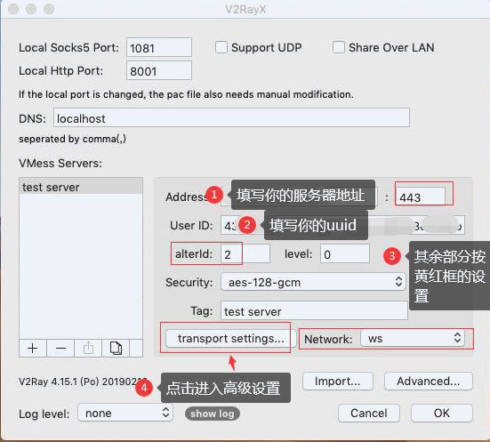 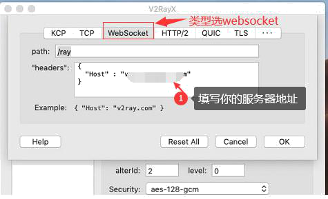step 4、enable v2ray-core
click “Preference”->”Kernel Settings ”,change default path for “V2Ray Core Executable Path” and “V2Ray Assets Directory”
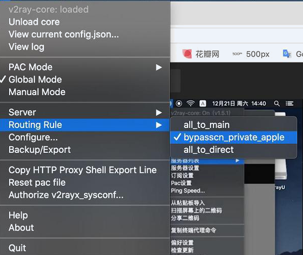change path of “V2Ray Core Executable Path” to /Applications/qv2ray.app/Contents/Resources/vcore/v2ray
change path of “V2Ray Assets Directory” to /Applications/qv2ray.app/Contents/Resources/vcore/
then click “check V2Ray Core Settings”
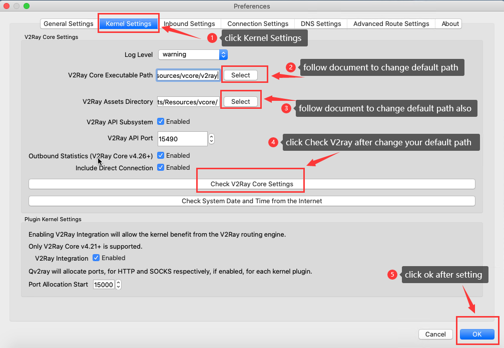follow step3 to enable v2ray-core again
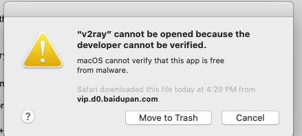then click “ok” to save
step 5.1、config your account info with auto config (recommend method)
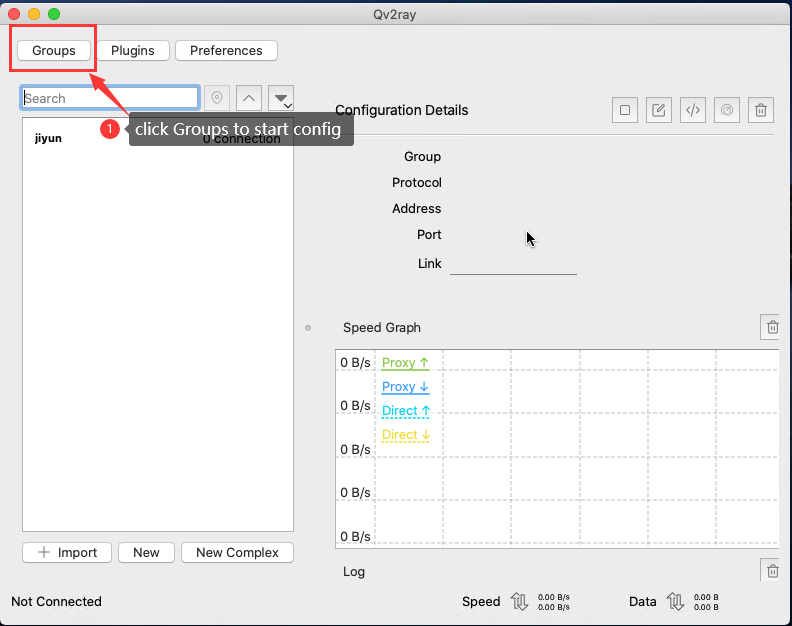 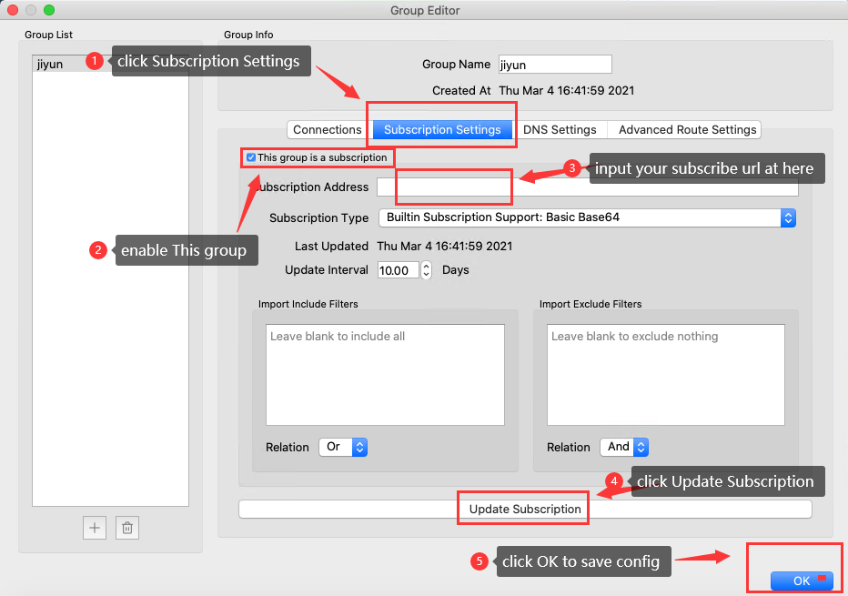 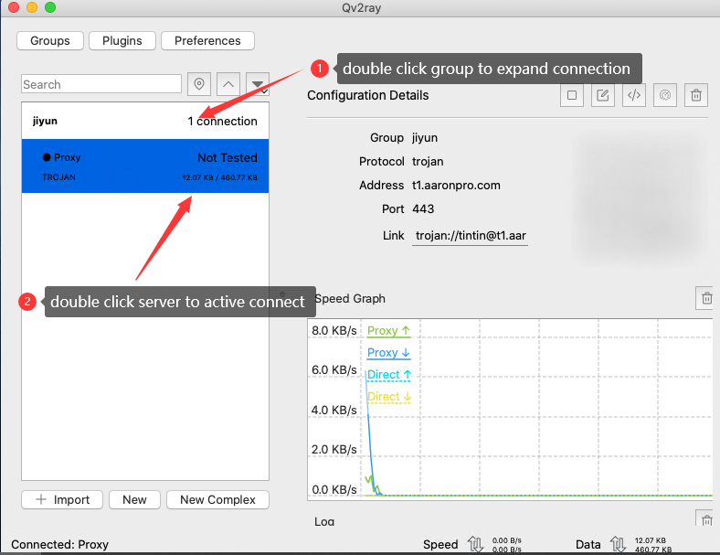step 5.1 try input your account info when you fail with step 5.1
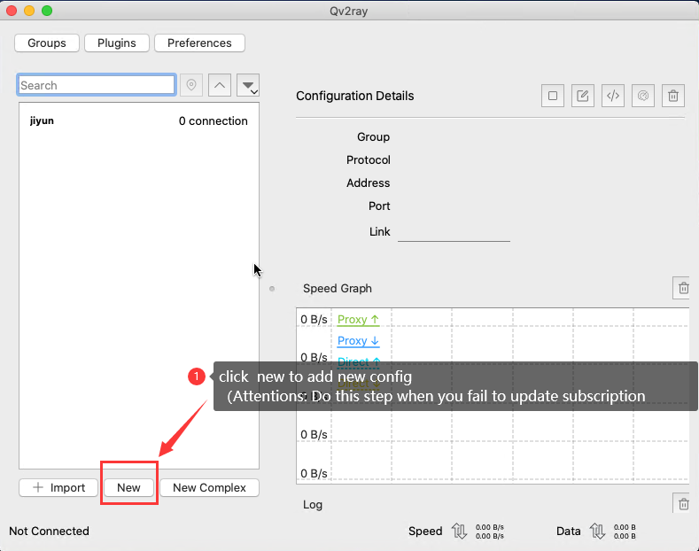 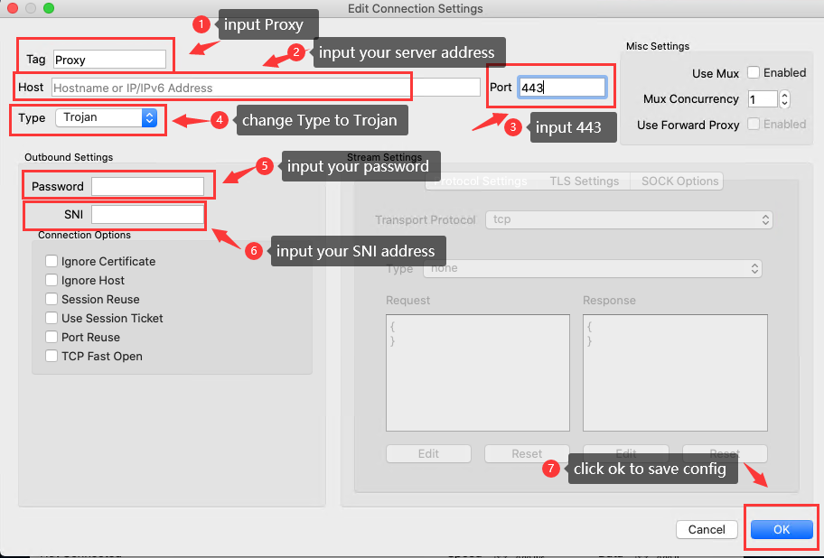